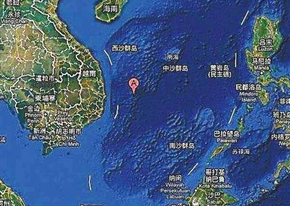

收录于合集
试论中国—东盟关系中的安静外交
作者简介：
周士新，博士，上海国际问题研究院外交政策研究所大国外交室主任。当前主要研究方向为：中国外交、中国-东盟关系、亚太政治与经济。
本文来源： 《国际观察》2017年第2期
获取方式： 后台（聊天页面）发送“ 国际观察 ”自动获取
摘要： 安静外交通常强调建设性和有效的幕后接触，通过和平方式处理和解决国际与地区争议。近年来因其成效显著，安静外交越来越被国际社会所重视。安静外交在透明度、倾向性、时效性和正式性等方面都存在着对立统一的逻辑关系。安静外交是中国与东盟维持和发展良好合作关系的途径之一。中国与东盟双方具有进行安静外交的传统和经验，但当前也受到了一定的压力。中国与东盟应该持续发展安静外交，为促进和提升双方战略伙伴关系做出应有的贡献。
关键词： 安静外交 中国—东盟关系 南海问题 管控分歧
在提倡外交民主化与信息公开化的当今时代，提高国际关系的高透明度已经成为一种趋势。安静外交作为一种“非主流”的外交方式，似乎并不符合国际社会对外交要保持高度透明的要求。通常来说，安静外交指的是通过幕后接触，以和平方式解决问题的外交活动。虽然安静外交并不被外界所了解，但其发挥的重要作用往往会逐渐地以不经意的方式显现出来，成为影响国际关系的关键因素。从全球范围来看，东亚地区，特别是东南亚地区是安静外交的主要集中区域，也是安静外交发挥效果最好的地区。东南亚国家具有安静外交的传统，近年来随着东盟地区一体化态势的加强，成员国之间的安静外交也呈现出增强的态势，对促进东盟共同体进程的稳健推进以及地区和平与繁荣产生了一定的积极作用。东盟国家领导人之间通过各种渠道，建立了比较密切的私人关系，为搁置领土主权争议、避免冲突和缓解危机、增进安全信任和信心，都产生了相当良好的效果。中国与东盟及其成员国之间的关系，近年来呈现出日益复杂、稳中有进的态势，而安静外交在其中发挥的重要推进作用，是分析双方关系时需要考虑的因素。

一、 安静外交的理论维度
尽管观点比较相近，但许多学者仍尽量从不同角度对安静外交进行了阐释。艾琳·巴比特认为，安静外交是指相关各方不因为对方的行为而公开批评和嘲弄对方，以私人磋商和交换信件等方式提供建议。安娜·路易斯·斯特拉坎认为，安静外交是指相关各方进行私人协商和通过密函交换意见，而不是嘲笑对方的行为。丹尼尔·佘认为，在安静外交中决策者经常能够相互尊重地进行协商，进行妥协，最终达成共识。维多利亚·格雷汉姆认为，安静外交是指在双边或多边会谈中，在媒体很少甚至没有参与的情况下，国家元首、政府首脑或高官之间直接接触，在没有威胁性的气氛下进行的平静、娴熟而持续性的协商或对话，以便为解决问题寻找建设性的方式。
作为一种外交形式，安静外交似乎缺乏明确的衡量标准，其概念界定并不清晰，总是给人一种非常神秘的色彩，其表现形式和实际效果也容易引起外界极富想象力的猜测。首先，安静外交总是处于非常隐蔽的状态，只有为数不多的当事人才知道事情的经过或来龙去脉，相关信息并不公开；其次，许多敏感问题通过安静外交得到了妥善解决，外界难以了解其中具体的运作进程；再次，安静外交的当事人在相关问题上故意低调，不愿引起国际社会的关注，可能与其一贯的风格相差太大，反而容易引起国际社会的兴趣；最后，安静外交的渠道多种多样，外界获取的信息并不完全，因而希望通过了解其中的原委和真相，以便更准确地预测未来的类似活动，从而掌控局势。因此，对安静外交进行细致分析，探讨其产生的主要原因和运行中的主要特点，更全面和客观地分析其在国际关系中所发挥的作用，从而对安静外交做出非常理性的判断，具有一定的学理与实践价值。
第一，从透明度上看，安静外交虽然保持着相当高的私密性，但并不是见不得阳光。从本质上讲，安静外交仍符合外交概念的所有基本特征，只是可能出于某种不便说明的原因，完全没有向外界公开，或者没有完全向外界公开，以防引起国际社会的高度关切，招惹没有必要的麻烦。然而，这并不意味着安静外交的行为本身是非法的，传达的信息是“邪恶”的，或者说整个过程是一种阴谋，会对第三方甚至国际社会造成极大的伤害。换句话说，安静外交传递的信息必须是正面的，建设性的，是任何一方都可能接受的，甚至在必要的时候可以昭告天下，而且不应引起不良后果。从某种意义上讲，当前国际社会上普遍存在的双边和多边闭门会议都具有安静外交的某些特征。有些闭门会议讨论的内容可能会存在较长的保密期，且会后释放出来的信息与会议真实内容相差较大，甚至还不如安静外交具有建设性。当然，如果当事方讨论的问题存在针对第三方的内容，并因此而不愿公开信息，就会沦为一般意义上的秘密外交。可以说，透明度低并不完全是安静外交的劣势，在某种情况下反而成为其他类型的外交难以比拟的优势，没有曝光或曝光度低并不会损害其行为的正当性。
第二，从倾向性上看，安静外交有助于预防冲突升级，避免局势失控。当国家之间出现因争议引发的冲突时，任何一方都可能将首先让步视为软弱的表现，并担心自己因此在以后的外交互动中处于下风，从而受到更多的损害。在这种情况下，如果公开外交无法缓解紧张态势并推进局势朝着更趋稳的方向发展，当事方完全有可能和有理由通过私下沟通的方式，采取更柔性的措施，在避免双方都遭受尊严、声誉和利益损失的情况下，进行讨价还价。如果各方就具体问题达成一致，就完全可以将安静外交转变为公开外交，并形成具有约束力的文件，让国际社会了解内容并监督执行。这样一来，安静外交就有了非常高的管理效力。安静外交可以促进各方了解和理解其他相关方的政策和利益关切，在相互协商中逐渐找到彼此都可以接受的具体方案，并在执行过程中增进相互间的信心和信任，从而为在类似问题上再次运用安静外交奠定基础。
更进一步看，安静外交有助于营造和平的氛围，为促进妥善解决问题提供有利条件。安静外交的最终目的就是鼓励各方养成以和平方式处理问题的习惯，避免争议问题成为影响各方关系的负能量，破坏未来合作的环境氛围。如果各方都能认识到，即使引起突发事件的各种原因依然会继续存在下去，但只要不爆发为冲突且不影响有利于各方和整个国际或地区的发展环境，妥协仍然是可以接受的，这就意味着安静外交已经发挥了效用。各方可以通过安静外交在心平气和的状态下理性思考各种解决路径的利弊，最终在友好气氛中找到各方都可以接受的最佳方案。当然，即使各方都坚持利益底线，阻碍了问题的解决，并导致谈判最终失败，也可以采取冷处理的方式，暂时将这些问题搁置起来。一旦各方利益冲突尖锐化，并引发公开辩论或争执，就意味着安静外交的结束或失败。
第三，从时效性上看，安静外交既可能是一种长期的外交习惯，也可能只针对具体问题而进行。通常来说，一次性的安静外交很难产生直接的效果。如果对手不愿意改变初衷，安静外交就没有达到预期的目标。在这种情况下，各方需要认识到，必须保持足够的战略耐心，与其他方进行多次的政策协调，才可能建立互信，释放出处理问题的积极意愿或信号。从信息论的角度来看，一次性的信息传递很难具有足够的说服力，重复的信息沟通才有助于传递出肯定的信号，让接受者提高对信息的信心。从另一方面来看，如果当事方之间原本就具有安静外交的习惯，并将之作为传递信息的重要渠道之一，信息接收者就更容易产生积极接受的倾向性，一次性信息沟通的效果可能会更好，可以减少不必要的纠缠。当然，如果一方完全没有解决问题的诚意，或者传递的信息并不具有建设性，提出的政策建议距离对方可以接受的政策底线相差太远，即使信息再明确、沟通渠道再畅通，最后的结果都有可能不理想。这种情况更多地体现在突发性问题上，当事方有可能因一时气愤而感性用事，要价太高，对方难以满足，导致安静外交最终失败。
第四，从正式性上看，安静外交的主渠道依然体现在政府层面，但非正式渠道也广泛存在。一般来说，具有政府背景的安静外交，特别是当事国领导人之间的信息沟通，具有更高的权威性和可靠性，产生的效果也会更直接一些。也正因为如此，安静外交往往被认为是国家领导人的专利。最高决策者是安静外交发挥作用的关键，但也更容易引起外界的关注。由于待处理问题的性质不同，安静外交得以进行的渠道和介质也会存在差异，其正式性也具有层次和本质上的差别。首先，国家领导人的界定本身就比较模糊，最高领导人决不是安静外交的唯一主体；其次，安静外交强调的是外交过程和方式，而不是最终结果，不一定需要最终决策人参与；再次，非完全官方背景的主体之间进行的多轨外交也可能是安静外交的形式，并可能因为待处理问题的敏感性太强，这一主体更容易成为各方先行沟通的探路人；最后，正式或首脑外交要比不太正式的安静外交更具刚性，当事方之间回旋的空间更小一些，有时会成为各方处理棘手问题的非首要选择。在这种情况下，纠结安静外交的正式性往往会陷入一种认知误区，将公开外交当作维系国家关系的唯一外交形式，反而会减弱公开外交所产生的积极效果。
总的来说，尽管安静外交很少被公开，但绝不是一般意义上的秘密外交。联合国参与的一些行动也明确显示，通过分析、预警、快速反应和伙伴关系等措施，可以在不断升级的危机中缓解紧张局势，有助于各方和平解决争议。前任秘书长佩雷斯·德奎利亚尔曾指出，“没有人会知道在著名的玻璃大厦里进行的接触避免或限制了多少冲突，这座大厦在需要时可以变得相当不透明”。安静外交在联合国、区域组织或某个长老理事会口头传承，但因其错综复杂很少诉诸笔端。作为一种外交策略，“安静外交”侧重于使用低风险的政策倡议，但核心是使用非冲突、非军事的战略。通常情况下，在没有冲突的环境下，安静外交确实更容易发挥作用，倾向于合作的谈判伙伴更愿意做出妥协。在冲突主导政治环境、不信任程度更高的情况下，安静外交实际上是不可能产生效用的。安静外交能避免相互之间采取单边强制的措施，不会对国家之间的关系造成负面影响。
因此，在现实情况下，只有当谈判伙伴愿意被说服时，安静外交才可能发挥了作用。二、中国与东盟的安静外交中国与东盟国家是近邻，从任何角度来看，发展和维持良好的合作关系对双方都有利。首先，双方都将与对方的关系视为最重要的对外关系之一。作为东盟的最大近邻，中国的内外政策都会扩散并影响到东盟国家，而东盟国家也是中国发展对外关系时综合考虑的优先方向；第二，双方对彼此的认知路径比较熟悉，双方都具有比较相近的东方文化价值观，都曾经经历过被殖民的历史，当前都处于推进国家现代化建设的紧要阶段；第三，双方历史上就具有较为密切的联系，当前正在建设面向和平与繁荣的战略伙伴关系。中国已经保持了多年东盟第一大贸易伙伴地位，而东盟也成为中国的第三大贸易伙伴，双方对对方的发展都相当重要；第四，双方也存在着一些难以解决的问题。这不仅体现在中国与部分东盟国家的领土主权争议上，而且体现在东盟成员国作为中小国家对中国会本能地产生忧虑心理。因此，中国与东盟国家的外交可谓是全方位、宽领域、多层次和高水平的，但同时也是极度复杂的。安静外交是维持双方合作关系的众多有效途径之一，而东南亚也是安静外交最为普遍和常见的地区。首先，东盟成员国之间的许多交往信息是不透明的，特别是在共同应对敏感问题期间，闭门会议往往会成为常态，这些闭门会议明显起到了很好的协调作用；其次，东盟成员国之间存在着很多难以调和的矛盾和需要解决的问题，有时甚至会突然爆发，引发国际和地区的高度关注，但这些事件似乎并没有升级为危机，影响它们之间合作的主旋律；再次，东盟地区一体化和共同体建设缓慢而有序，说明尽管相互之间的协调仍存在着一些问题，但各成员国通过广泛的联系渠道维持了让它们都比较满意的状态；最后，东盟成员国领导人之间具有密切联系的渠道，甚至建立了良好的个人关系，信息沟通比较顺畅，超过了媒体和官方公开报道的范围。在这种情况下，中国要发展与深化和东盟的关系，要理解东盟的现状和演进前景，就要重视安静外交的作用。
中国与东盟国家具有安静外交的传统和经验，并得到了双方的高度认可。东盟国家最为称道的安静外交是对待缅甸前军政府的“建设性接触”政策。东盟通过以协商和对话为基础的非正式和渐进合作方式，迎合了缅甸前军政府的舒适度，使双方保持着适度合作的范围。在这个问题上，中国一直试图在缅甸与东盟之间进行安静外交，寻求两者的协调合作，同时努力避免联合国安理会通过对其施加正式制裁的决议。中国一方面劝说缅甸前军政府接受联合国驻缅甸特使易卜拉欣·甘巴里的访问，一方面与东盟保持对话，关注其是否会达成关于缅甸问题的集体决议。因此，当新加坡提出甘巴里需要在2007年11月举行的第三届东亚峰会上向16个国家领导人作报告时，中国认为这似乎偏离了“安静外交”的范畴，因为东亚峰会领导人达成的主席声明，与联合国大会的主席声明在本质上是相似的，虽然不具有行动效力，但明显会对缅甸前军政府造成极大的外交压力，不仅不利于东盟内部的团结，而且也可能影响东亚峰会的顺利举行。在这种情况下，根据缅甸前军政府的请求，中国对新加坡的提议表达了反对意见，最后东亚峰会未让甘巴里进行通报。
从目前来看，中国与东盟的安静外交主要集中在以下几个方面：
首先，中国与部分东盟国家关于南海领土主权争议的谈判。中国强调直接相关的主权国家通过友好磋商和谈判，以和平方式解决这类问题。这一立场在2002年中国与东盟国家签署的《南海各方行为宣言》第四条中得到了具体反映，并在2011年7月达成的《落实〈南海各方行为宣言〉指导方针》和2016年7月达成的《中国和东盟国家外交部长关于全面有效落实〈南海各方行为宣言〉的联合声明》中得到了肯定。中国与东盟各直接相关国家的长期谈判在很多情况下都处于相对安静的状态，同时因为各方都不愿让步而进展缓慢。菲律宾由于自身的原因，退出了与中国的谈判进程，转而寻求通过国际仲裁的方式解决争议，导致中菲关系陷于紧张状态。当然，东盟部分国家之间在南海问题上也存在领土主权争议，寻求双边直接谈判也是它们的优先选择。
其次，中国与东盟国家合作维护南海地区的安全形势。中国与东盟国家从2004年12月开始到2016年8月中旬，已经举行了13次高官会和18次联合工作组会议。各方讨论在协商一致的基础上推动早日达成“南海行为准则”，采取具有约束力的具体措施，避免南海地区安全形势出现失控，维护南海的和平与稳定。当前，根据中方向东盟提出的“南海行为准则”的“四点愿景”，各方力争在2017年上半年完成框架草案，并以此为基础进一步磋商彼此都可以接受的政策文本，维护好南海各方、各国依据国际法在南海的航行和飞越自由的权利，确保南海成为和平之海、合作之海。
再次，中国与东盟国家共同提升地区安全信任和信心。在东盟国家与中国的关系上，缺乏信任或对解决问题的信心不足显得格外突出。中国在与东盟国家通过东盟地区论坛、东盟防长扩大会议、“东盟+X”领导人会议和东亚峰会，以及其他层次和领域的多边平台加强协调的同时，也在这些会议期间保持着非常密切的安静外交。此外，中国与东盟国家通过双边平台上的安静外交讨论各种共同关心的国际、地区和双边问题也非常普遍。通过这些频繁的交流互动，有助于增进中国与东盟国家的相互理解，在遇到敏感问题时可以避免许多不必要的矛盾。
最后，双方在非传统安全领域的合作。自2003年SARS疫情出现以来，中国与东盟在应对诸如传染病传播等非传统安全威胁上加大了合作力度。由于处理这类问题需要快速准确的信息沟通和行动协调，同时鉴于有些问题甚至会涉及到有关国家主权的敏感议题，因此包括安静外交在内的手段，都必须得到大量使用。当然，东盟内部在应对非传统安全问题上也建立了许多相应的机制，中国也通过机制对接的方式，在双边和多边平台上，在反恐、减灾救灾、打击海盗、打击毒品走私、打击贩卖人口等非传统安全领域，加强了与东盟及其成员国之间的密切合作。
安静外交能发挥作用。从东盟国家来看，一方面是因东盟倾向于安静外交，另一方面是因东盟为了维持自己在南海问题上协调人的角色。印度尼西亚与中国一直不愿让外界知道双方在南海争议海域曾发生一些小摩擦。由于倾向于使用安静外交，马来西亚对中国在曾母暗沙投放主权碑并进行主权宣誓的行为，并没有采取任何行动，就是不希望引起国际社会的关注。然而，这并不意味着马来西亚软弱或会在南海争议中让步。越南、菲律宾与中国的冲突历史让这三个国家都不会轻易相信其他方在南海问题上的政策立场，这导致各方立场僵化和冲突升级。三国政府都需要在争议问题上显示强硬立场，以迎合国内民族主义，这也使得和平解决南海领土主权争议变得更加困难，但各方仍努力通过一定形式的安静外交避免冲突升级。
从更广泛的范围来看，美国重返亚太，推行战略转向和再平衡战略对东盟国家和中国都构成了较大压力，而中国与东盟国家稳健的外交关系，也对美国的亚太政策构成了一定程度的挑战。美国希望通过增加与亚洲国家的防务合作掌控亚太地区的安全局势。美国认为，中国正利用自己的影响力，引诱或迫使亚太国家拒绝接受美国的战略介入，影响地区形势的稳定。中美两国都认识到，与东盟国家进行外交接触时，需要考虑到它们的舒适度和接受度，满足或至少不损害他们的战略利益，通过“润物细无声”而非“狂风暴雨”的方式和节奏，才有可能推进与它们的战略合作关系。因此，作为与东盟国家地理位置更近，感受更为相似的中国，为了与东盟国家维持“睦邻友好”的关系，采取安静外交的倾向性更强，在实际工作中运用得也更多，且取得了相当明显的效果，维持了地区持续性和平与发展的大局。相比之下，美国更强调外交的透明度，外交手段显得更加刚性强硬，尽管没有放弃使用安静外交，但在程度上和数量上都要少很多，对缓解地区紧张形势帮助较少。
二、 中国与东盟安静外交的前景
综合来看，中国与东盟都盛行安静外交，主要源于以下几方面的原因：
首先，中国与东盟国家领导人高度重视“面子”和声誉问题。安静外交具有模糊性，强调以共识和非冲突方式为基础解决问题。非冲突行为与让其他国家“保住面子”是密切联系的，这是一种尊重规范的表达方式。如果“面子”不要了，冲突也就爆发了。东亚地区特别注重社会和人情关系，社会道德规范的约束在某种情况下甚至超过规则的限制，成为许多人不愿意冒险触碰的红线。在这种情况下，处于社会中的精英分子难以摆脱各种社会习俗的制约，对不利于自己声誉和利益的任何信息都高度敏感。这也影响了个人对国家声誉的基本认知，任何人都不愿成为损害国家利益的历史罪人，坚决不愿做让国家蒙羞的事情，或者不愿让外界看到自己做了让国家蒙羞的事情。
其次，中国与东盟成员国大都具有较强的现代性。东盟大多数国家都是通过民族解放运动推翻殖民统治而获得独立的，在发展对外关系时特别强调国家领土完整和主权独立的重要性。任何一届政府宁愿采取私下沟通的方式来全力地维护国家核心利益，以避免此类问题影响自己执政的合法性；再次，中国与东盟部分国家之间以及东盟成员国之间的许多传统安全问题没有在短期内得到解决的可能。冲突和战争只会让形势变得更糟，已经不再是它们应对此类问题的首要选择。
最后，中国与东盟成员国都希望继续促进地区一体化建设，稳步推进地区和平与繁荣，增强战略沟通有助于增进信心和信任。东盟国家仍缺乏与大国博弈的实力、能力和经验，缺乏与域外大国打交道的信心。东盟国家间通过包括安静外交在内的各种方式保持及时的政策沟通，对鼓励包括中国在内的各大国支持东盟在地区合作中的中心地位至关重要。
从目前来看，东盟的安静外交已经成为促进中国与东盟关系的重要组成部分。东盟的安静外交至少存在三个层次：
第一，东盟成员国之间的安静外交，主要是处理双边关系问题，或者是与第三方有关的问题。从双边关系上看，东盟成员国特别强调通过双边谈判的方式处理领土主权问题，不会轻易接受其他国家的建议和干涉，任何国际干预只会让情况变得更为复杂。当然，如果没有传统安全问题引发的争议，安静外交通常会进行得更加顺畅一些。从第三方的情况来看，涉及到两个方面：一是第三方可能对冲突当事双方提供建设性意见，希望它们能和平解决争议；二是反过来，冲突当事方对第三方的政策建议以及相互之间的互动。这其中也可能会产生一定量的三方互动问题。
第二，东盟层面上的安静外交。尽管这仍主要体现为东盟国家之间的互动，但多边主义的特征更明显一些。东盟国家围绕着共同关心的议题进行讨论，寻求解决问题的途径和办法。当然，在东盟国家形成集体决议后，会对各成员国具有一定的约束力，一些暂时无法落实决议的成员国会通过安静外交的途径，寻求其它成员国的谅解，减轻自己承受的压力。
第三，东盟与域外国家的安静外交。这不仅体现在中国与东盟国家共同参与东盟地区论坛、“东盟+X”领导人会议和东亚峰会期间相互间的战略沟通，还表现在在其他场合或轨道交流中，促进东盟与包括中国在内的各大国之间保持总体稳定的合作关系。
安静外交往往与和平解决争端、主权平等概念一起被界定为“东盟方式”的重要元素。根据“东盟方式”，东盟“每个成员都不会公开批评其它成员的政策”，这也“让东盟成员国避免在双边关系紧张时屈从外界的压力”。东盟并不是解决争议和冲突的正式机制，而是营造一种环境，让这些问题不会出现或容易得到管理和控制。东盟的安静外交主要体现在东盟成员国更倾向于将争议搁置一段时间，然后才通过非正式的途径管理冲突和解决争议。当成员国间出现问题时，各国政府并不公开发表他们的不同意见，避免冲突可能升级而更加难以管控。与此同时，他们会通过闭门商谈消除这些分歧。东南亚的很多双边冲突在没有东盟参与的情况下，仅通过安静外交，却得到了有效管理。正因如此，中国也寻求通过“东盟方式”发展与东盟的关系，试图像东盟成员国一样处理与东盟及其它东盟成员国之间存在的问题，并希望实现同样的解决效果。
中国与东盟的安静外交体现出以下几点特征。第一，高度重视国家主权独立的现代性。这是东盟成员国发展对外关系时的基本底线，也是他们与中国进行合作的基础。东盟国家都坚决反对外部力量干涉自己的内政，并以此为基础通过对外交往促进国家的利益；第二，尤为关注在处理传统安全问题上的非干预性。这体现了东盟国家在处理传统安全问题上的基本态度。在泰国和柬埔寨多次爆发边境冲突期间，东盟其它成员国及域外大国都通过双边方式对两国关系进行协调，但并没有发挥多大的作用。柬埔寨甚至申请东盟和联合国参与争议解决，但也都遭到了泰国的拒绝；第三，倾向在非传统安全领域进行合作的开放性。东盟大多数成员国都不具备独立应对大规模自然灾害、跨国犯罪、反恐、传染病防治等问题的能力，需要相互协调和帮助才可能改善安全环境，有效解决问题。无论是2004年的印度洋海啸、2008年的缅甸热带风暴、还是2013年的菲律宾台风等造成的灾难，都曾成为东盟地区论坛、东盟防长（扩大）会议和其他地区多边安全机制讨论的重要议题；第四，中国支持东盟作为一个集体加强团结，希望与其携手建设更为紧密的命运共同体。中国与东盟国家需共同努力，坚持讲信修睦、合作共赢、守望相助、心心相印、开放包容，使双方成为兴衰相伴、安危与共、同舟共济的好邻居、好朋友、好伙伴。
从趋势上看，中国和东盟的安静外交会继续发展。其主要原因在于：首先，影响安静外交的主要因素依然存在。无论是东盟国家还是中国都高度重视“面子”和声誉问题，在维护国家利益的同时，也希望这些问题不要影响他们在国际上的正面形象。在这方面，作为一个努力塑造和维护负责任形象的大国，中国经受的压力更大。因此，在现实利益仍可调和的情况下，各方都不希望撕破“面皮”，将对方逼到死角，让解决问题的道路走向死胡同，最终形成两败俱伤的局面。由于安静外交的成效通常得益于各方长期友好沟通的顺畅，任何对国家间关系构成伤害，或者试图侮辱对方的言行，只会让对方感到愤怒，从而为下次安静外交的展开投下阴影；其次，中国与东盟国家都不愿让负面问题影响相互间的合作态势。在经济领域处于领先优势的中国让东盟国家“搭便车”，把“亲、诚、惠、容”的外交理念落实到具体行动中，同时也使这些国家因忌惮失去中国市场而软化立场，提高安静外交的成功率。当然，中国也在补全自己在安全上的“短板”，发展军事实力，提高维护地区安全的能力，与东盟国家加强安全合作，让它们既感受到中国崛起的和平性，也主动保持自我克制不触犯中国利益底线。这样，安静外交有助于东盟国家更明确地表达自己的真实意图，增强和中国进行协调与合作的意愿。例如，2014年11月11日，马来西亚总理纳吉布访华时曾对马来西亚媒体表示，“习近平主席也认识到马来西亚采取的安静外交是最好的方法，因为安静外交强调讨论而不是冲突或在国际上拉帮结派”；再次，中国和东盟国家需要理性对待第三方的影响。近年来，部分东盟国家在美日等域外大国的鼓动下试图让中国在许多问题上做出更多的妥协，同时也希望借美日印澳等域外力量制衡中国，从而使自己有更大的自主外交空间，推进各大国支持自己在地区合作中的中心地位。对此，中国需要与东盟国家进行沟通，既要了解对方的做法，也要理解对方的想法，同时敦促对方不要采取可能损害中国利益的行动；最后，中国与东盟需要妥善处理可能恶化双方关系的问题。中国与部分东盟国家在南海问题和湄公河等跨界河流问题上存在一定的分歧，但这些都不是中国与东盟的问题，甚至不是中国与所有东盟国家的问题。有些东盟国家与中国持相同立场，甚至与中国的利益保持一致，所以，有些问题其实是东盟国家之间的问题。在这些利益和立场相互纠缠的复杂形势下，安静外交实际上可以为各方通过和平途径管控分歧、弱化争议提供可能。
结 语
得益于自身的和平倾向性，作为一种建设性的秘密外交，安静外交已经成为国际社会中各国处理敏感问题时比较常见的一种方式。安静外交强调不通过强制手段解决国家之间的问题，因此更容易被许多弱小国家所接受，成为它们协调相互关系以及发展与大国关系的优先选择。一般来说，大国可以使用的资源较多，手段也比较广泛，敏感性也不是很强，安静外交并不一定是它们处理相互之间问题的首要手段。然而，大国需要考虑到弱小国家的特殊性，至少应该在一般情况下采取平等的政策立场，以安静外交的形式打破僵局、维持稳定或提升关系。因此，安静外交迎合了国际关系非对抗、协调合作的发展倾向，通过营造一种宽容和包容的环境，为各方进行良性互动、寻求共识提供基础。
东盟一直非常重视具有非冲突性和避免冲突国际化的安静外交。这种集体性的政治文化已经成为其处理成员国之间关系以及成员国与东盟关系，甚至东盟与域外国家关系的重要动力。尽管《东南亚友好合作条约》提供了管理和解决冲突的机制，但从来没有得到具体的应用。东盟及其成员已经建立了多层次的对话协商渠道，为安静外交提供了非常便利的条件。作为东盟最大的近邻，中国在与东盟国家商签《睦邻友好合作条约》的过程中，需要妥善处理相互间存在的问题，同时更应该向前看，以更高的战略眼光和更长远的视野搁置或弱化可能影响双方关系的负面因素，增强促进双方关系的正能量，为提升双方战略伙伴关系，促进地区安全形势的稳定做出应有的贡献。
声 明
国政学人微信公众平台系非盈利学术平台。文章出自最新的南大CSSCI和北大中文核心来源期刊。目的是方便广大学人进行学术研究，促进学术的传播和交流，不做任何商业用途。如有任何权利问题，请直接与我们联系。
上划拖动查看 ↑↑↑
“国政学人”微信公众平台立足于政治学、国际政治与国际关系等专业领域，系统更新最新核心期刊与经典著作，兼顾社科学术研究方法和论文写作技巧的普及。“我们既生产学术，又做学术的搬运工。”“国政学人”致力于打造广大学人的掌上图书馆与高端学术传播平台，立志为中国国际政治学的传播与发展贡献自己的一份力量。
如果您有佳作或批评建议，请编辑内容发送至guozhengxueren@163.com, 欢迎来信与投稿！请动动手指分享到您身边的学术群、朋友圈，让国政学人惠及更多的朋友，